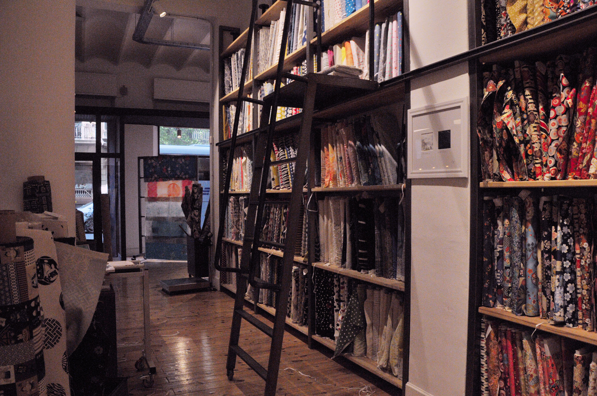

Tiendas
Madame Chocolat
Madame Chocolat es una tienda de ropa y accesorios de cosas alternativas japonesas donde puedes encontrar desde ropa lolita, gótica, steampunk, otras tendencias alternativas y un largo catalogo de accesorios y decoración japonesa.
Nunoya
Madame Chocolat es una tienda de ropa y accesorios de cosas alternativas japonesas donde puedes encontrar desde ropa lolita, gótica, steampunk, otras tendencias alternativas y un largo catalogo de accesorios y decoración japonesa.

Nunoya
Madame Chocolat es una tienda de ropa y accesorios de cosas alternativas japonesas donde puedes encontrar desde ropa lolita, gótica, steampunk, otras tendencias alternativas y un largo catalogo de accesorios y decoración japonesa.